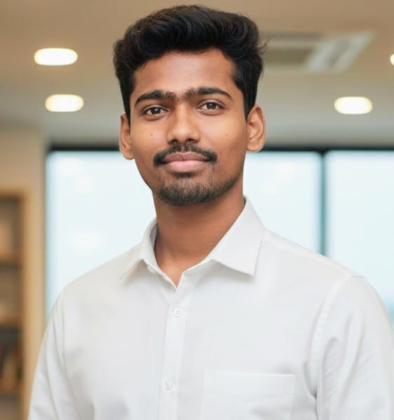

My Name is Shashank,My Native is Hodigere,Channagiri Taluk, Davangere District, Karnataka.I am pursuing my BE in Computer Science and Engineering at Governement Engineering College Challakere.now my cgpa is 8.4, My PUC is completed at Shree Basavapriya Science and Commerce PU College Channagiri with 81.5%.My High School is completed at Shree Madhukeshwara High School Hodigere with 87.04% I am Currently Doing internship at XworkZ and SuperMentr
During Engineering Days Participate so Many Hackathons and Competitions.In College Level Hakathons Got the First place in Second Year and in Similarly Got the Second Place in Third Year.Got the Second place.also Got the Specilization and Participation Certificate in inter College Level Hackathons.
During my internship at XworkZ, I have been involved in various software development projects, gaining hands-on experience in coding, debugging, and collaborating with a team of professionals. This opportunity has allowed me to apply my theoretical knowledge in a practical setting and enhance my problem-solving skills.
| Education | Institution | Year of Completion | CGPA/Percentage |
|---|---|---|---|
| Bachelor of Engineering (BE) | Government Engineering College Challakere | 2024 (Expected) | 8.4 CGPA |
| Pre-University Course (PUC) | Shree Basavapriya Science and Commerce PU College Channagiri | 2020 | 81.5% |
| High School | Shree Madhukeshwara High School Hodigere | 2018 | 87.04% |